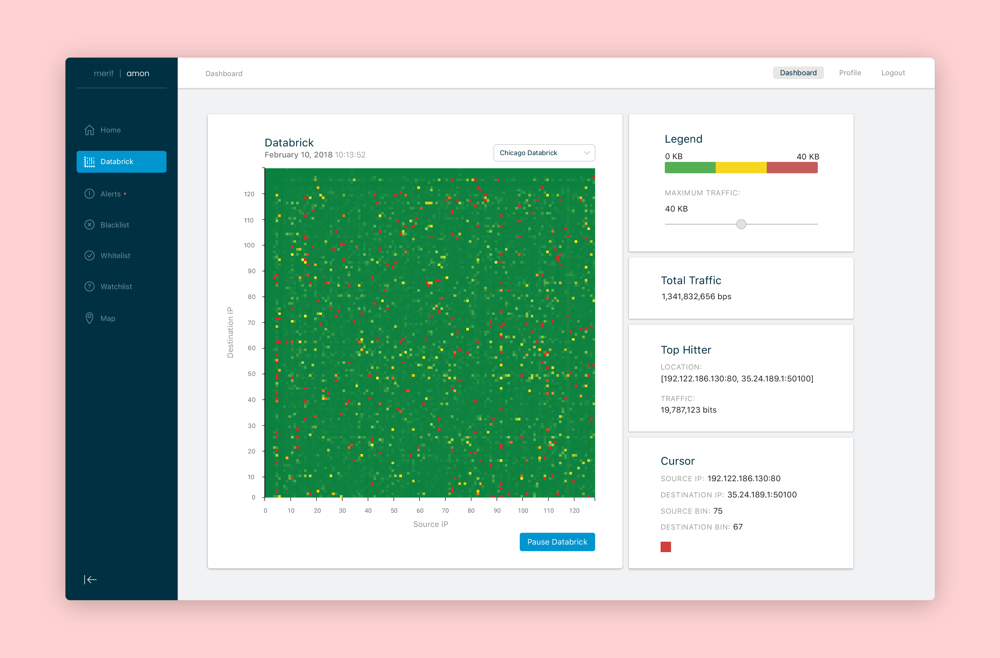

May 2017 - Present
Reimagine Muskegon Education and engagement through urban design
Reimagine Muskegon was a social media based project founded by myself and one other
Research Writing Graphic Design
1 Designer (me) 1 Urban Planner
The Project
The Problem
Residents of Muskegon, Michigan need a convenient way to learn about urban planning/design efforts in the area and a dependable way to provide community input towards these efforts so they can play a valid role in the growth of the city.
Aside from personal research or sporadic local news, both of which rarely move beyond surface level analysis, Muskegon residents lack a source of education on urban planning and design efforts in the area. Our solution, Reimagine Muskegon, was a social media-based project promoting community, diversity, and city strength through education and contextualization of urban design in Muskegon.
My Role
Our role with this project was to educate the general public on the development, form, and function of urban areas in Muskegon, and promote community discussion about these topics. In terms of our educational role, we focused on historic and present day context, social impact, and future growth of these urban areas. In addition to these educational efforts, we also focus on promoting discussion amongst our followers, frequently asking open questions and gauging opinions on topics.
Staying Anonymous
While I had sufficient knowledge of urban planning and design concepts and my partner in the project received a degree in Architecture and Urban Planning, the majority of our work with Reimagine Muskegon was based in extensive research on each topic we would cover. With this, we never revealed our identities to the public while the project was active in order to avoid our ages or backgrounds playing any role in the perceived validity of our work.
The Process
Taking Shape
With this broad concept of “promoting community, diversity, and city strength through education and contextualization of urban design” we had plenty of options as to how we would actually formulate this project.
What Started it All
The visualization that started it all is known as the IP Pair. This displays all the network traffic in a single, real-time visualization that updates every three seconds to show current traffic. While this feature was already implemented in PHP on the AMON Dashboard when I joined the team, my first step was to recreate this visualization for my Python-based, Bokeh Dashboard.

Developing New Features
After this small application was complete, the next step was to start prototyping new visualizations of the network data. First, I developed an application that allows a user to look at past IP Pair visualization using sliders to change the date and time of data that they are viewing.

Next, I developed an application that visualizes the total traffic flowing over the network in real-time as well as multiple other simple applications to visualize similar network traffic data.

More Advanced Applications
After implementing numerous other visualization applications, I began working on creating applications that allow for more a granular look at the data, such as listing alert information on possible internet attacks like DDoS attacks, or visualizations of subnets within the data to look at network traffic only entering or leaving from a certain sub-network such as the University of Michigan.

Connecting the Dots
In total, I have 10 prototyped, functional applications built. The main issue that another developer and I realized was that while my rapid prototyping was working smoothly, the actual AMON Dashboard was suffering from its construction using a PHP web development framework. With this in mind, we decided to replicate the AMON Dashboard using a Python web development framework called Flask. Flask is lightweight, allows for easier adoption when this project becomes available as an open-source project, and allows for incorporation of the Bokeh applications that I have built.
Now that we have the skeleton and a few features built using Flask, the next steps are to implement my Bokeh applications, and situate everything in a manner that allows for easy hand-off to the next wave of developers that will be working on AMON.
Takeaways
Asking Questions
Coming into the project, I found myself in a position where I had not been throughout my education or other jobs I’ve had: utter confusion. Throughout my education, I could almost always get by without admitting my confusion. I could read a textbook or wait for another student to ask the question that I had. At Merit, however, nobody was there to ask these questions for me, and randomly picking articles and documentation to read about the subject often felt like reading a foreign language. I quickly learned that I had to admit my confusion and ask questions, even about seemingly simple concepts, to ensure that I could move forward in the project.
Applying Prior Experience to New Fields
Aside from asking for help to understand the field that I was working in, I find myself in a position where I am able to explore the relationship between my experience in design with the work I am doing with internet networks and security. My work at Merit is to not only to develop applications for our AMON software, but also to ensure that what we are building offers a simple interface for people to interact with and understand the data they observe. While the concept of internet networks and security was a new field to me, the way people interact with the applications that let them explore this field ties back to all the experience I have with user experience design and human computer interaction.